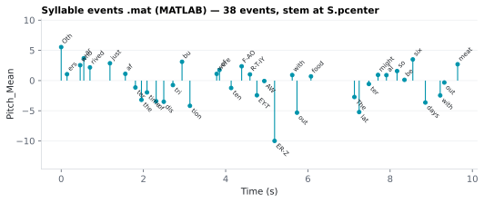

On this page
6.3.2Syllable events .mat (MATLAB)
One MATLAB file per stimulus, syllable/<stim>_syllable_events.mat, with one entry per syllable: start, end, label, parent word and every numeric syllable feature the run kept.
6.3.2.1What it is
One MATLAB file per stimulus, syllable/<stim>_syllable_events.mat, with one
entry per syllable: start, end, label, parent word and every numeric
syllable feature the run kept. When the P-center ran, the perceptual centre is
included as pcenter, an alternative time anchor to onset
(see P-center).
Like the word events file, it stores events, not
impulse trains: no fixed grid, no resampling. Every variable is an n × 1
column vector and names match the syllable CSV's column names.
6.3.2.2See it

6.3.2.3In your output
| variable | size | MATLAB class |
|---|---|---|
label | 38 × 1 | cell |
onset | 38 × 1 | double |
pcenter | 38 × 1 | double |
Pitch_Mean | 38 × 1 | double |
6.3.2.4MATLAB
S = load('syllable/LJ002-0321_syllable_events.mat');
whos('-file', 'syllable/LJ002-0321_syllable_events.mat') % variables, sizes, classes
stem(S.pcenter, S.Pitch_Mean); hold on
text(S.pcenter, S.Pitch_Mean, S.label, 'Rotation', 45)
xlabel('Time (s)'); ylabel('Pitch_Mean')
6.3.2.5What's in the file
Rows are the syllable CSV's rows that have an aligned Onset and End
(punctuation has none). Row order is the CSV order. Text-only runs write no
file.
| Variable | Contents | Type |
|---|---|---|
text |
the transcript text, whitespace-normalised | char row |
label |
the syllable's orthographic Label |
cellstr |
token |
the word the syllable belongs to | cellstr |
onset, offset, duration |
Onset, End, Duration: seconds from audio start, seconds |
double |
pcenter |
P_Center, seconds from audio start; present only when P-center ran |
double |
sentence_id, syllable_id |
the same-named CSV columns | double |
| one variable per remaining numeric syllable column the run keeps | e.g. Pitch_Mean, Volume_Mean, Pitch_Delta, Volume_Delta; NaN where the CSV cell is empty |
double |
columns |
the names of the feature variables above, in CSV order | cellstr |
units |
the unit of each, aligned with columns (empty where none) |
cellstr |
ARPABET and IPA (strings) are not in the file; the CSV has them. Syllables
come from the aligned word, so unlike the word file there is no merging: the
.mat and the CSV agree row for row (apart from the dropped rows above).
6.3.2.6MATLAB
Use S = load(...): a bare load would put a variable named text in the
workspace and shadow MATLAB's text() function.
S = load('syllable/<stim>_syllable_events.mat');
% Stem a syllable feature at each syllable's perceptual centre, labelled
stem(S.pcenter, S.Pitch_Mean); hold on
text(S.pcenter, S.Pitch_Mean, S.label, 'Rotation', 45)
xlabel('time (s)'); ylabel('Pitch\_Mean');
% Put the events on your own sampling grid (fs Hz, N samples)
fs = 128;
N = ceil(max(S.offset) * fs) + 1;
ok = ~isnan(S.Pitch_Mean);
x = accumarray(round(S.pcenter(ok)*fs) + 1, S.Pitch_Mean(ok), [N 1]);
accumarray adds the values that land on the same sample; x(idx) = v would
keep only the last of several events sharing a sample. Replace S.pcenter
with S.onset for physical syllable onsets, or if P-center was off (the
variable is then absent). NaN feature values propagate through
accumarray, so the snippet drops them first when the feature has gaps.
6.3.2.7Configuration
Sub-word features → Syllable timing card → Events .mat (<stim>_syllable_events.mat) toggle, off by default. The card's switch
(features.master_syllable_intervals) greys it out; in config/features.yaml
it is features.feat_syllable_events_mat. It is written only when the
Sub-word level output is on, and a run with it on always aligns and
syllabifies.
6.3.2.8In the code
Source: sensi/utils/event_mat.py:syllable_event_vars; written by
sensi/pipeline.py:run_word_level_batch.
What the code does:
- Takes the syllable frame the run already built, after the per-column drop,
so the same per-column toggles that decide the CSV columns decide the
.matvariables. - Keeps rows with non-
NaNOnsetandEnd; returns nothing (no file) if no row is left. - Adds
label,token, timing and, ifP_Centeris kept,pcenter; then every remaining numeric column, asdouble. - Checks every variable name is a valid MATLAB identifier (raises rather than
renaming) and writes with
scipy.io.savemat(..., oned_as="column").
The file is written by the word pass only. ⚠️ onset/offset/duration are
always present even if the syllable CSV drops those columns, because they are
the reason the file exists.
6.3.2.9Library
scipy.io.savemat writes the file; the values come from the pandas frame the
run already holds.